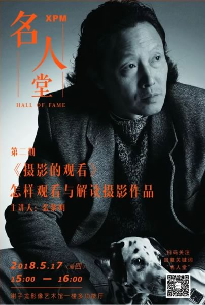

当前位置：当前位置：公共教育 - 公开课 - 详情

世界摄影史经典纪实作品，怎么看才韵味？张黎明带你读图
主讲嘉宾：张黎明
活动时间：2018年5月17日 15:30-17：00
活动地点：谢子龙影像艺术馆多功能厅
活动主题：《摄影的观看》怎样观看与解读摄影作品
活动流程：
15:00 多功能厅签到
15:30-16：30 嘉宾讲座
16:30-16:40 提问交流
16：40-17：00 合影留念
15:30-16：30 嘉宾讲座
16:30-16:40 提问交流
16：40-17：00 合影留念
报名方式

张黎明，职业摄影师。
1954年2月出生于长沙，20世纪70年代末走进摄影，连续两届荣获第十八、第十九届全国摄影艺术展金奖、哈苏全球 100 位摄影师奖、德国“莱卡”奖、1999年荣获中国摄影最高奖“金像奖”、2002 年荣获美国柯达专业摄影师奖等众多荣誉奖项。
目前是“明 • 空间视觉影像工作室”负责人；湖南省文史馆研究馆员；湖南摄协副主席；中国摄协商业摄影委员会委员；湖南商业摄影专业委员会副主席；湖南省艺术摄影学会副主席。

维纳斯对张黎明老师印象最深的地方，在于他的微信签名，短短一句话——
“我是做影像的，这是注定的。”
这样简单的一句话，却有磅礴笃定的信念感。
是什么样的人生经历使他拥有了这样的信念？他的影像背后又有什么故事？我们这次邀请到张黎明来到谢子龙影像艺术馆，谈一谈他眼中的【摄影的观看】。
「 你的观看决定了你的态度 」
维纳斯：您这次分享的主题是“如何做一个在地艺术项目”。首先想请您给大家科普一下，什么是“在地艺术项目”？
张黎明：所谓“在地艺术项目”，是指在一个地方长时间地停留下来，扎扎实实融入当地居民的生活，进行扎扎实实的艺术创作，你可以把它看做一种田野调查。现在的国内的摄影创作气氛有点浮躁，到了一个地方走马观花地凭自己的感觉或印象拍摄一下，创作出来的大部分摄影作品流于表层流于形式，这是一种不好的现象。
「 对世界摄影大师纪实类作品的解读 」
维纳斯：您最近有在创作什么样的“在地艺术项目”吗？
张黎明：这几年我在寻访中国的一些村庄，我有个计划：最少要走访100个村庄，现在已经走了浙江、河南、重庆等省份二十几个村庄了。其中，重庆中县的一个村庄持续观察有十年了。